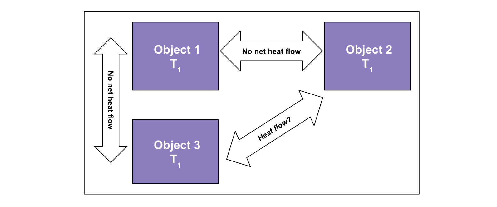
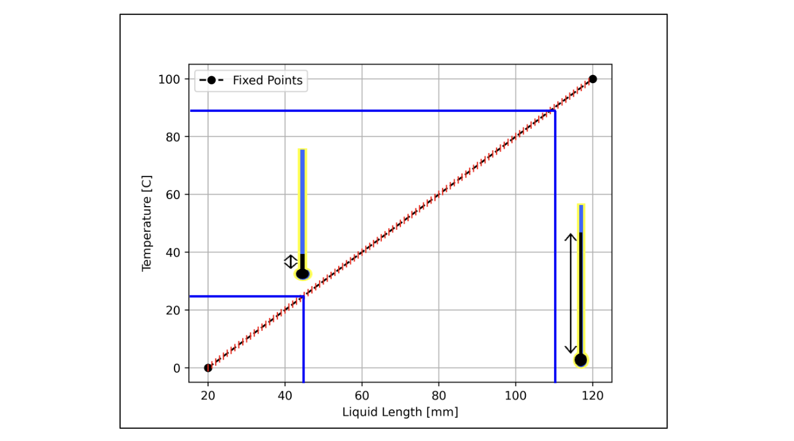

Lecture 2: Thermometry#
Learning Objectives#
By the end of this lecture you should:
Be able to explain the difference between heat and temperature.
Be able to define “thermometry”.
Be able to efine what a “thermometric property” is.
Be able to define a temperature scale by using the thermometric property of the substance.
Heat and Temperature#
In everyday conversation we often use the terms “heat” and “temperature” interchangeably. However, in physics each of these terms has a very specific meaning and it is important that we know the difference.
We use temperature as a measure of the hotness or coldness of something, which itself is rather abstract as hotness and coldness from an experiential perspective are rather vague terms. That being said, there are many physical properties that are temperature dependent, e.g. the length of a bar of metal or the ability of a conductor to carry current. This means that there is an underlying physical mechanism that we can relate to temperature.
Ultimately, temperature is a measure of the average kinetic energy of the atoms/molecules in a substance. Considering what we learnt about negative temperature coefficient resistors last semester - as the temperature of a NTC increases, so does the kinetic energy of the molecules that form it, as these vibrate more, they impede the flow of current.
For a given solid, if we continue to increase the temperature of the material, eventually the chemical bonds that bind the molecules together will begin to break and there will be a phase transition, e.g. solid to liquid, liquid to gas, or solid to gas (sublimation).
But how do we increase the temperature of the wire? In essence we “heat it up” i.e supply it with heat. Therefore heat must be a form of energy that can be transferred from one object to another.
Heat always flows from hot to cold, which is why when you place two bodies at different temperatures in contact with one another, they will eventually reach thermal equilibrium. The heat from one body is transferred to the cooler body, increasing the temperature of the cooler body and decreasing the temperature of the hotter body.
Temperature
Temperature is a measure that is proportional to the average kinetic energy of the atoms in a substance.
As a solid heats up, the vibrational energy of its atoms increases until it reaches as point where chemical bonds break.
This leads to a “change of state” or “phase transition” when the solid changes from a solid to a liquid.
As the temperature increases further, there is a second change of state and the liquid turns into a gas.
Heat
Heat is a measure of the the total internal or thermal energy that an object or substance has.
Heat is a form of energy so has the unit of Joules, J.
Heat will always flow from a hot body to a colder body, and this heat flow is a flow of energy.
Heat flow is measured in Joules per second, or Watts, W.
For a given amount of heat that an object possesses, the temperature is dependent on the mass and volume of the object. If the object is very large or massive, this heat must be dissipated across more material or space, which results in an overall lower temperature than if this heat was contained within a small mass or space.
Conversely, you may have very little heat energy, but a very high temperature if the energy is contained within a very small amount of mass or concentrated in a very small volume of space - for example, a spark. For any given object however, the more heat that it has, the higher its temperature will be. The heat and temperature of an object are related to one another via its mass.
Example
To affirm our understanding of heat and temperature, consider an \(80˚\,\)C cup of coffee sat in a room that has an ambient temperature of \(25˚\,\)C.
What happens to the temperature of the coffee over time?
Why does this happen?
When does this process stop?
Heat Flow#
To answer the questions above, we must consider the flow of heat from one object to another aka the heat flow. Heat flow occurs when there is a difference in temperature between two objects as heat energy will flow from the hotter object to the cooler object. The difference in temperature between two objects seperated by a given distance is known as a temperature gradient. The steeper the temperature gradient, the greater the heat flow between the two objects.

As heat energy flows from the hotter object, its temperature decreases, whereas as energy flows to the cooler object, its temperature will increase.
Heat will continue to flow between the two objects so long as there is a temperature difference. Over time the difference in temperature between the two objects will decrease, meaning the temperature gradient (and therefore heat flow) also decreases as a function of time.
The following factors impact the amount of heat flow between two objects:
The temperature difference between them - the greater the temperature difference the greater the heat flow.
The actual temperature - this is related to the mechanisms through which heat may be transferred. For example, heat can be transferred either by conduction, convection or radiation. At higher temperatures radiation tends to dominate.
The surface area of the objects - if we have a larger surface area more heat is able to flow through the surface in any given period of time.
The amount of insulations around an object - if we are able to insulate our object and prevent heat being conducted away as easily, we are able to reduce the amount of heat flow. For example consider a flask. This contains a vessel within a larger vessel between which is a partial vacuum. The lack of air molecules in this cavity reduces the amount of heat loss via conduction and convection.
Thermal Equilibrium#
After a given amount of time, the temperature of the two objects will be the same (they’re in thermal equilibrium) and there is no net heat flow between the two objects

Now consider the system shown below. Here we have three objects, object 1 is in thermal equilibrium with objects 2 and 3.

Are objects 2 and 3 are also in thermal equiblirium with one another?
Yes - objects 2 and 3 must be in thermal equilibrium with oneanother as if there is not net heat flow between either of them and object 1, then they must both be the same temperature as object 1, which means that they are also the same temperature as each other.
In summary: if body 1 is in thermal equilibrium with bodies 2 and 3, then bodies 2 and 3 are in thermal equilibrium with each other.
The summary statement in the dropdown above is known as the zeroth law of thermodynamics and it is this statement is what makes a thermometer useful: it measures its own temperature, but when the thermometer is in thermal equilibrium with another body it will also measure the temperature of that body.
This brings us onto thermometry, which is essentially understanding how we can use physical properties of materials in order to determine the temperature of another body.
Thermetric Properties#
The physical properties of an object that change with temperature are known as thermometric properties and these include the volume expansion of materials, the electrical resistance of materials, and at very high temperatures, the peak wavelength of light emitted by hot glowing objects. A thermometric propertiy is a physical property that changes in a known way with temperature.
We are going to consider how we could use the thermal expansion of a liquid to measure temperature using a thermometer. In a liquid thermometer, we have a liquid that expands or contracts as a function of temperature, thus the volume it occupies/the length in the thermometer tube also changes as a function of temperature. If we know the volumes the liquid occupies for a given series of temperatures, we can mark these volumes/temperatures of the vessel walls. To do this we must perform a calibration between the length of the liquid in the tube and the temperature.
An alternative style of thermometer is the bimetallic strip. This is effectively a strip formed of two metals, each with different thermal responses to heat, arranged in a spiral. As the temperature changes, one of the metals with expand or contract more than the other, causing the metal strip to bend. One end of the metal strip is connected to a casing and the other a pointer, the position of the pointer then changes as a function of the temperature. Again this can be calibrated with temperature. The image below was taken from here

In the case for either thermometer, to perform the calibrations we first need to define some temperature scales!
Temperature Scales#
The difficulty in defining a temperature scale is the fact that when we do so we have no thermometer to act as a starting point, instead we must use reproducible starting points that always occur at the same temperature - these are known as fixed points.
Assuming that the thermometric property we are measuring varies linearly with temperature, we would need two fixed points to define our temperature scale. What is a convenient example of this? The temperatures at which phase transitions occur e.g. the freezing and boiling points of water! However, we should note that even this is not trivial as the freezing and boiling points of water are dependent on other factors such as air pressure, the presence of impurities in the water etc.
The examples of the melting and boiling points of water are “fixed points”. Using fixed points we are able to ensure that the temperature read out of one thermometer is consistent with that of another, regardless of the type of thermometer.
The other things we need to consider when defining our temperature scale is how many intervals between our fixed points we want to include. For example, say that there are 100˚ difference between the freezing point and boiling point of water, and this is why water freezes at 0˚C and boils at 100˚C. However, we could just as easily define a different number of degrees and say water freezes at zero and boils at 50˚C.
The easiest way to consider a temperature scale is to plot it:

The gradient of the plot is given by:
\( m = \frac{\Delta y}{\Delta x} = \frac{T_U - T_L}{X_U - X_L}, \)
which can be written as:
\( m = = \frac{N}{X_U - X_L}, \)
where \(N\) is the number of steps between \(T_U\) and \(T_L\), where the subscripts indicate the upper and lower fixed points. For example for the Celsius scale, \(N=100\).
So using the steps above, we can perform a calibration between the length of the liquid in our thermometer and the temperature of the body we are measuring, in this instance water. Here we can see that at 0C, which we are defining as the freezing point, the length of the liquid is at 20mm, whereas at 100C, which we are defining as the boiling point, the length of the liquid is at 120mm.
By determining the gradient of this line, for any given value on the x-axis, we can determine the corresponding value on the y-axis. e.g. for any given measured length, we can determine the temperature, however before we are able to do this, we must also know the intercept of the line so that we are able to use \(y = mx + c\), which in this case can be expressed as:
\( T_M = \frac{N}{X_U - X_L} X_M + c, \)
where \(T_M\) and \(X_M\) are the measured temperature and measured lenght of liquid in the thermometer, respectively. By writing an expression for the temperature at the lower fixed point:
\( T_L = \frac{N}{X_U - X_L} X_L + c. \)
and by subtracting this expression from the expression for the measured temperature, we can eliminate the intercept term and thus derive an expression that allows us to determine the temperature for any given length of liquid:
\( T_M - T_L = \frac{N}{X_U - X_L} X_M + c - \left(\frac{N}{X_U - X_L} X_L + c \right), \)
\( T_M - T_L = \frac{N}{X_U - X_L} X_M - \frac{N}{X_U - X_L} X_L, \)
\( T_M - T_L = \frac{N(X_M - X_L)}{X_U - X_L}, \)
\( T_M = \frac{N(X_M - X_L)}{X_U - X_L} + T_L. \)
Using our example of a liquid thermometer and using the Celsius scale, the lower temperature we used corresponds to 0˚C, which simplifies our expression to:
\( T_M = \frac{100(X_M - X_L)}{X_U - X_L}. \)
On the physical thermometer, rather than having a scale that shows the length of the liquid in the glass tube, we simply print on the temperature that each length would correspond to. This saves us from needing to perform the conversion between measured length and temperature each time.

Alternative Temperature Scales#
There are different temperature scales that may be used which use different fixed points, for example 0 degrees fahrenheit corresponds to the freezing temperature of a solution of brine made from a mixture of water, ice, and ammonium chloride (a salt), and is equivalent to approximately -17.8˚C. 100˚f corresponds to just over a normal body temperature (~37C).
The Kelvin scale is more absolute, zero kelvin represents absolute zero, the temperature at which a thermodynamic system has the lowest possible about of energy. An increase in 1K corresponds to an increase in 1˚C, and 0K is equal to 273.15˚C. We will use Kelvin regularly in this course.
Steps for Defining a Temperature Scale
So to summarise how we may use a thermometric property to define a temperature scale, the steps are as follows:
We first choose a thermometric property (e.g. volume, peak wavelength, electrical resistivity).
We then measure the thermometric property at and upper and lower fixed point (ideally fixed points that correspond to reproducible temperatures such as phase transitions)
We then use the fixed points to define an upper and lower temperature, separated by a given range or number of intervals (N).
We can then perform a calibration between the fixed points and defined temperatures to give us any unknown temperature for a given measurement.
When using the thermometer, the value \(X_M\) of the thermometric property is measured at an unknown temperature \(T_M\). The unknown temperature is defined by the equation:
\( T_M = \frac{N(X_M - X_L)}{X_U - X_L} + T_L, \)
where \(N\) is the defined temperature range between the upper and lower fixed points.
Thermometer Limitations#
Thermometers can often be used beyond the range of their fixed points but we need to be cautious. The linear relationship between the thermometric property and temperature is only an approximation – non-linearities can become significant if we stray too far beyond the fixed points. This can make our thermometer inaccurate beyond the fixed points.
The medium that we use to measure temperature with must not change state over the temperature range that we use the thermometer. For a liquid in glass thermometer using water this means that the thermometer would not be valid below 0 °C or above 100 °C. Different materials would show different temperature ranges. Generally the temperature range of a liquid in glass thermometer is limited by the change of state of its working liquid.
In the example we used above, liquid water would not be an ideal material for measuring temperature, as at 0˚C, the water would freeze and expand, whereas at 100˚C the liquid would boil. This limits the range of temperatures we can measure. An alternative material could be used such as mercury, which has a freezing point of -38.83˚C and a boiling point of 356.7˚C.
Question#
Warning
Atempt the questions before looking at the solutions otherwise you will not learn!
Students who look at mark schemes without going through the motions of a question often think “yes, that’s what I would have done”, but are then unable to perfom on exams as the knowledge was never consolidated through practise.
Question 1#
What are heat and temperature?
Q1 Solution
Heat is a measure of the total internal or thermal energy that an object or substance has. Heat is energy and is measured in Joules, J.
Temperature is a measure of the average amount of kinetic energy that the atom/molecules in a substance have. As a substance is provided with heat, its temperature will increase.
Question 2#
A length of mercury thread in a liquid-in-glass thermometer measures \(40.0\,\)mm at the lower fixed point and \(110\,\)mm on the upper fixed point of the Celsius scale. Calculate the temperature when the length of the mercury thread is: \(80.0\,\)mm, \(160\,\)mm and \(32.0\,\)mm.
Q1 Solution
In order to solve this question we simply need to use the equation derived above:
\( T_M = \frac{100(X_M - X_L)}{X_U - X_L}. \)
We can then subsitute in the appropriate values for each of the measured lengths:
\( T_M = \frac{100(80\,mm - 40\,mm)}{110\,mm - 40\,mm} = 57.1˚C \)
\( T_M = \frac{100(160\,mm - 40\,mm)}{110\,mm - 40\,mm} = 171˚C\)
\( T_M = \frac{100(32\,mm - 40\,mm)}{110\,mm - 40\,mm} = -11.4˚C \)